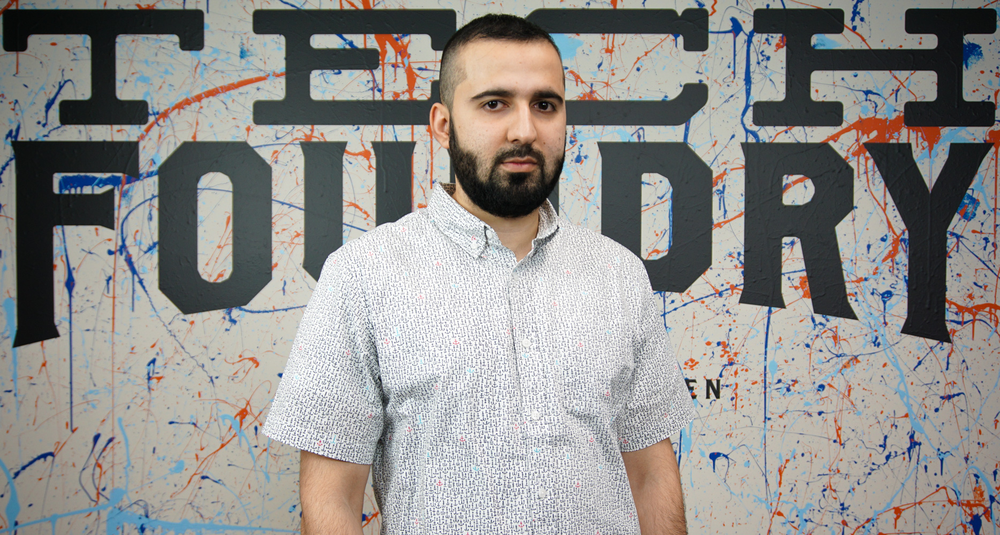

Abdul Resume page
Abdul Asharf
Computer Information system
256 City view ave,West Springfield, MA 01089|aasharf7164@westfield | (413) 735-3238
Work Experience
New York Chicken Springfield, MA
Assistant General Manager 2010-2016
- Managed employees to meet and exceed company expectations, increased satisfaction.
- Ran cashier, assisted customers, upkept facility to the highest of sanitation standards.
Westfield State University Westfield, MA
Computer Lab Technical Support Internship September 2015-December 2015
• - Served in an internship at the computer lab of the university
-
• Assisted and guided students with any technical difficulties with computers and technology
• Assured every computer was working properly and running smooth, fast and efficiently.
Education
Westfield State University 2015-2017
• Anticipated date of graduation is 05/10/2017
• Majoring in Computer Information Systems (CIS)
Springfield Technical Community College 2010-2013
• A.S. in business administration
West Springfield High 2009
Additional Skills and Achievements
Languages: English, Pashto and Urdu
Computer courses:
• Intro to Computer Information System
• Algorithmic language
• Introduction to Cobol
• Advance Cobol/file processing
• Visual Programming concept
• Computer Science Programming Design 1
Skills:
• Operating Systems: Windows
• Languages: Java, Python, SQL and Cobol
• Applications: Microsoft Word, PowerPoint, and Excel
Homepage!